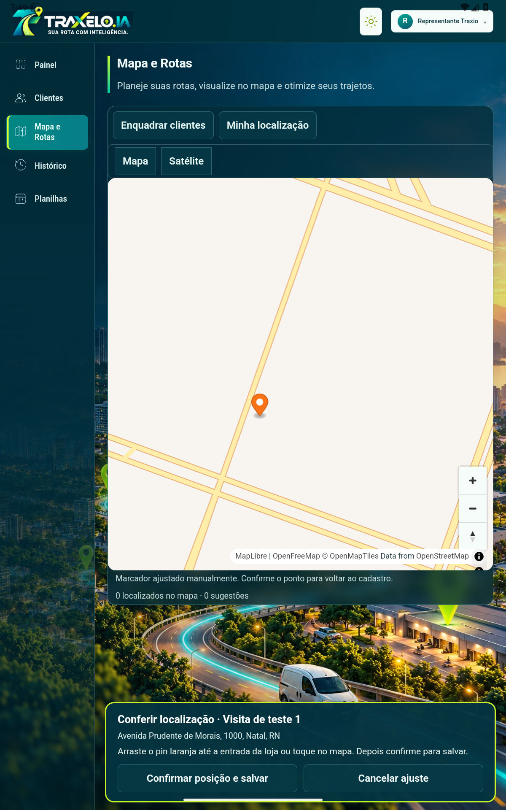
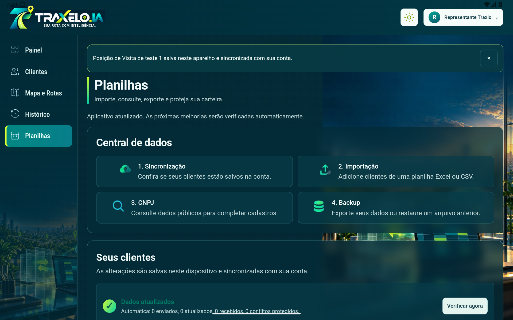

Abrir Traxelo.IABusca de clientes e confirmação direta no mapa
O menu está em uma camada fixa independente. Mapa e Rotas agora tem uma busca explícita de localizações, pontos da carteira confirmada e o fluxo: abrir pin → ajustar → confirmar posição e salvar.
O aviso diferencia salvamento neste aparelho e sincronização com a conta. Resultados aproximados exigem confirmação; não representam precisão física comprovada.
Relatório técnico, limitações e testes executados

Android: mapa e ponto confirmado. Carteira sintética de teste.
Tablet após rotação: navegação permanece acessível.42 testes de interface, incluindo WebKit; 21 testes na página pública; 8 verificações do atualizador e fluxo Android em emulador. O salvamento de banco foi exercitado com um double isolado do RPC existente. Não foram usados os 157 clientes reais nem um dispositivo físico.
Evidência estruturada do Android · Testes públicos · Testes Android